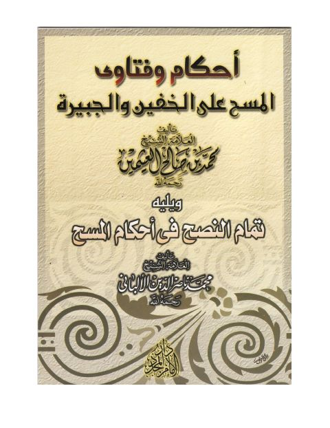

Publishers
دار الإمام المجدد للنشر والتوزيع
Publisher
Resources

أحكام المسح على الخفين والجبيرة، ويليه تمام النصح في أحكام المسح للألباني
أحكام المسح على الخفين والجبيرة، ويليه تمام النصح في أحكام المسح للألباني
محمد بن صالح العثيمين • محمد ناصر الدين الألباني